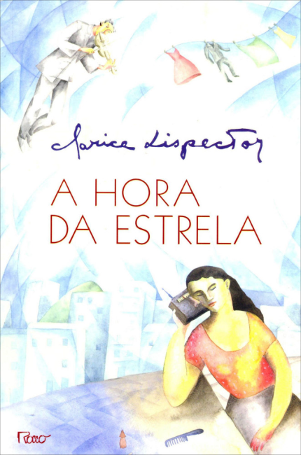
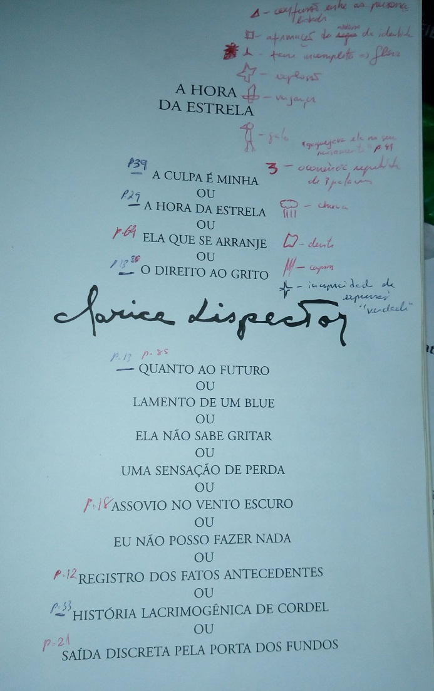

A hora da estrela - parte 1
sáb 24 fevereiro 2018

Ideia
Há um ano li pela primeira vez o livro A hora da estrela, da Clarice Lispector e fiquei maravilhado com o quebra-cabeça em forma de texto, tal qual no O pequeno príncipe. O texto parece ser a expressão superficial de um mecanismo complexo - por trás dele há uma Clarice Lispector; por trás dele pode se posicionar um Abelardo. Provavelmente há uma expressão para esse tipo de leitura, que consiste em buscar um significado oculto através do texto: este significado está tanto oculto no texto e no seu autor, mas também no leitor. A leitura consiste então em realizar uma autorreflexão guiada pelo texto. Aqui irei colocar notas das reflexões que fiz na leitura do A hora da estrela.
Quanto ao livro, não vou descrevê-lo. É a Macabéa, ou eu, ou você.
Intragável
Lembro bem quando comecei a leitura do livro: esse texto foi gerado aleatoriamente? Mas acreditar que por trás dele houve um ser humano, com intenções e ideias profundas, me fez persistir. E achei fantástico encontrar nele tantos temas que me interessam, tantos padrões para explorar.
As leituras que se seguiram, 3 vezes desde então, foram sempre bem lentas, pausadas, não lineares: por vezes me peguei relendo a mesma frase várias vezes.
No mundo da ciência de dados há a ideia de que os dados lhe dirão qualquer coisa se você os torturar. Esse livro tem me dito coisas por eu tê-lo torturado, com tantas leituras? Talvez. A finalidade da leitura, como disse, não é encontrar o significado que o autor quis transmitir, mas o significado que está oculto em mim, estimulado pelos símbolos do texto.
Observações

No decorrer da leitura identifiquei alguns temas que são recorrentes e fui marcando, com alguns desenhos, suas ocorrências no texto. Segue a lista:
- Confusão entre as personagens: seguindo a ideia de que todas as personagens são expressões da Clarice, esse tema se refere aos trechos onde parece haver uma confusão sobre que personagem está se expressando naquele momento.
- Afirmação de identidade: há diversos trechos que me trazem a ideia da necessidade de afirmar-se como indivíduo, único.
- Frase incompleta
- Explosão: há várias ocorrências da expressão explosão entre parênteses.
- Vingança
- Galo
- Palavra repetida 3 vezes em sequência
- Chuva
- Dente
- Capim
- Incapacidade de expressar verdade: há trechos que me passam essa ideia do inefável, que sempre me fazem lembrar dos contos do H.P.Lovecraft e a interpretação de seu universo como uma alegoria para questões psicológicas.
Sabe aquelas peças do quebra-cabeça que identificam uma posição da imagem, que montamos primeiro para então, ao redor delas, montarmos as demais? Essas são algumas das peças que achei.
Título
A hora da estrela é apenas um dos títulos do livro: logo no início há uma lista de pequenas frases separadas por ou.
Quando notei alguns dos títulos dentro do texto, comecei a anotar as páginas em que ocorriam e comecei a procurá-los, primeiro prestando atenção na leitura, depois pesquisando na versão digital do livro. Seguem, com indicação da página onde aparecem:
- A culpa é minha - p.39
- A hora da estrela - p.29
- Ela que se arranje - p.64
- O direito ao grito - p.13
- Quanto ao futuro - p.13
- Lamento de um blue
- Ela não sabe gritar
- Uma sensação de perda
- Assovio no vento escuro - p.18
- Eu não posso fazer nada
- Registro dos fatos antecedentes - p.12
- História lacrimogênica de cordel - p.33
- Saída discreta pela porta dos fundos - p.21
Até mais
A partir daqui, vou fazer uma leitura linear do texto, comentando as ideias que me vieram.